《一梦江湖》原名《楚留香》，在去IP化中渲染质量同时也进行了升级，为当前手游市场上同类型游戏渲染的代表作。本文从渲染管线，阴影，光照，GI，后处理等多个角度对本游戏PC和移动两个版本，结合Demo实例具体分析。（图为Demo还原角色）
PC版本使用GPA渲染分析工具截帧分析，移动平台为小米8手机（高通骁龙845），渲染分析工具为Snapdragon Profiler。
研究过程中对游戏角色主要材质着色器在Unity3D引擎进行还原，为了通用性，并未使用SRP，而采样默认渲染管线。

《一梦江湖》PC渲染流程如上图，为前向渲染管线。移动端中不绘制AO。且移动平台线性空间转Gamma空间在Opaque,Mask，Transparent三个阶段中执行；而PC中颜色矫正在Combine Bloom阶段。
在绘制Depth阶段，写入深度，同时角色单独写入模板。在Opaque阶段ZTest Func 为Equal.
Transparent 绘制前先把ColorRT拷贝出来，然后先绘制折射效果的如水面，角色眼睛角膜等对象，然后再绘制其余半透明渲染对象。
《一梦江湖》Shadowmap渲染在3张1024的RT。其中角色Shadow每帧都更新，单独绘制在一张RT上，在光照阶段采样。场景Shadow近处和远处物体分别绘制，在ScreenSpaceShadow阶段分两个Pass采样计算SSShadow。
| Character Shadowmap | Scene Shadowmap 1 | Scene Shadowmap2 |
|---|---|---|
 |
场景SSAO在场景ScreenSpaceShadow阶段之后绘制在降分辨率的一张纹理上，模糊之后写入场景ScreenSpaceShadow RT上另一个通道中。
| ScreenSpaceShadow | AO | Blend AO |
|---|---|---|
 |
 |
 |
《一梦江湖》场景和角色受光照不同，主要差别在场景受烘焙GI影响，角色额外受动态GI和一个摄像机方向的虚拟光影响。
场景光照主要由以下几部分构成：
| Lighting | Sun Diffuse | Sun Specular | Bake GI Diffuse | Env Specular |
|---|---|---|---|---|
| 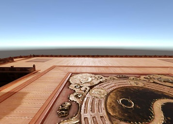 |  |
 |
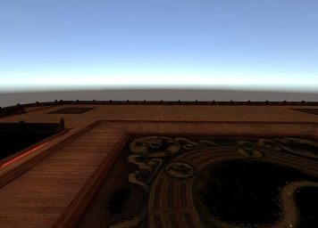 |  |
Directional Light
Lambert漫反射光照模型，GGX BRDF高光模型
环境光反射
环境光压缩在一张256 * 256 的纹理上，如图：

采样函数如下：
half3 GetIBLIrradiance(in half Roughness,in float3 R)
{
half3 sampleEnvSpecular=half3(0,0,0);
half MIP_ROUGHNESS=0.17;
half level=Roughness / MIP_ROUGHNESS;
half fSign= R.z > 0;
half fSign2 = fSign * 2 - 1;
R.xy /= (R.z * fSign2 + 1);
R.xy = R.xy * half2(0.25,-0.25) + 0.25 + 0.5 * fSign;
half4 srcColor;
srcColor = tex2Dlod (_EnvMap, half4(R.xy, 0, level));
sampleEnvSpecular= srcColor.rgb * (srcColor.a * srcColor.a * 16.0);
return sampleEnvSpecular;
}
| Sun Diffuse | Sun Specular | Virtual Lit Diffuse | Virtual Lit Specular |
|---|---|---|---|
 |
 |
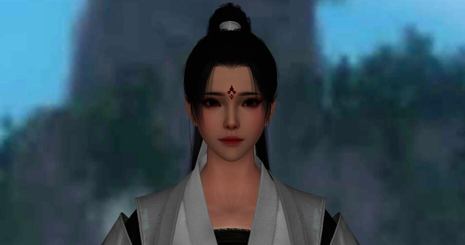 | 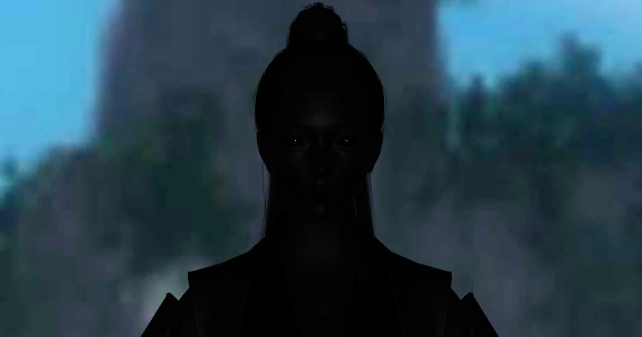 |
| GI Diffuse | Env Specular | Skin Refraction | Lighting |
|---|---|---|---|
 |
 |
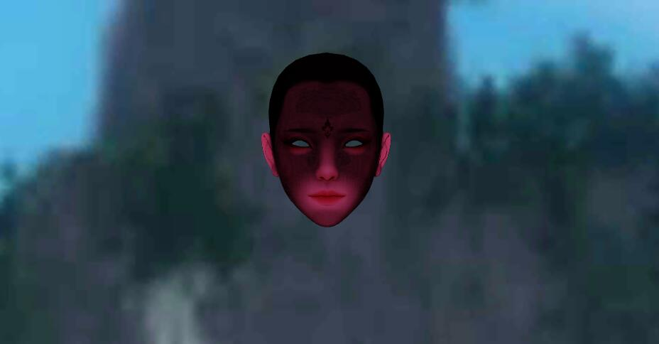 | 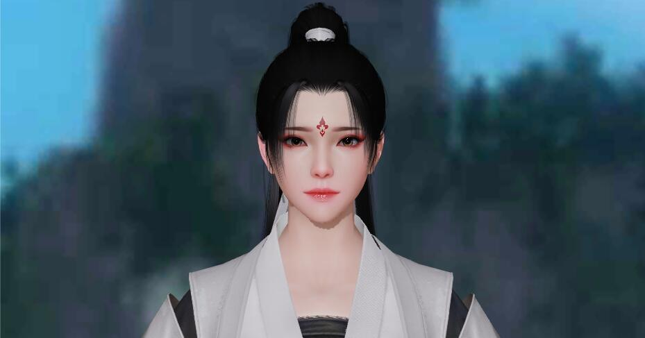 |
Directional Light
Directional Light 是游戏中主方向光，投射实时阴影。采用Lambert漫反射光照模型，GGX BRDF高光。
Point Light
游戏引擎支持点光源和聚光灯。游戏中在选择角色界面使用1个点光源。本次分析截帧的多个场景下未使用。
环境光反射
环境光反射与场景相同。
Virtual Light
Virtual Light 是游戏中从一个相机方向发出的只对角色作用的较弱的补光，也是平行光，不投射阴影。采用Lambert漫反射光照模型，GGX近似 BRDF高光模型。
Dynamic GI
游戏中使用预计算的实时GI，对角色影响。
Other
此外头发高光，皮肤，眼球等光照在下文中分别解读。
《一梦江湖》角色分为 身体，头部，头发，眼球（左右），角膜和泪腺，眉毛，睫毛等几个部分。其中身体，头部，眼球为不透明渲染；头发前后分别是镂空渲染和半透明渲染；眉毛和睫毛为半透明渲染，角膜和泪腺为半透明折射渲染。
其模型三角面数如下：
| Name | Body | Head | Eye | Corneal | Eyebrows | Eyelash | Hair mask | Hair Transparent |
|---|---|---|---|---|---|---|---|---|
| Mesh |  |
 |
 |
 |
 |
 |
 |
|
| Triangles | 7066 | 5396 | 312 | 406 | 312 | 972 | 1545 | 5048 |
角色身体皮肤和衣服并未分开，用Mask贴图区分开来，采用统一的光照。纹理大小为2048。
| Name | Base Color | Normal | Mask | Mix |
|---|---|---|---|---|
| Texture |  |
 |
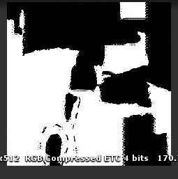 |  |
| Mobile Size | 1024 | 512 | 512 | 1024 |
| PC Size | 2048 | 2048 | 512 | 2048 |
| Name | Base Color | Normal | Detail Normal | Mix | Lut | Crystal | Crystal Mask |
|---|---|---|---|---|---|---|---|
| Texture | 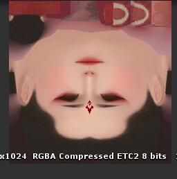 |  |
 |
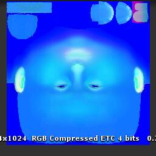 |  |
 |
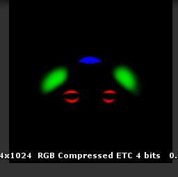 |
| Size | 1024 | 1024 | 256 | 1024 | 256 | 512 | 1024 |
| Size | 2048 | 2048 | 256 | 2048 | 256 | 512 | 2048 |
| Name | Base Color | Normal | Mask |
|---|---|---|---|
| Texture |  |
 |
 |
| Mobile Size | 128 | 256 | 256 |
| PC Size | 128 | 256 | 256 |
角膜和泪腺的着色在不透明渲染完Color Buffer拷贝之后，半透明渲染之前的阶段，采样ColorBuffer混合。
| Name | Base Color | Mix |
|---|---|---|
| Texture | 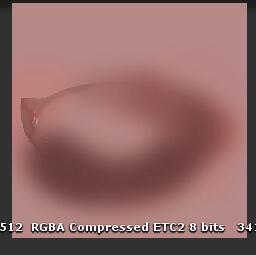 |  |
| Mobile Size | 512 | 512 |
| PC Size | 512 | 512 |
Virtual Light各向异性高光计算结果叠加在BaseColor中，影响平行光和GI的Diffuse计算。
float virtualAniso = cAnisotropicScale * AnisoSpec(viewDir, viewDir, normalVec, VirtualLitNoL, i.world_tangent.xyz, i.world_binormal.xyz,Roughness_X, Roughness_Y );
BaseColor.rgb += virtualRadiance * virtualAniso;
| Name | Base Color | Normal | Mix |
|---|---|---|---|
| Texture | 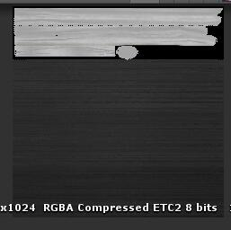 | 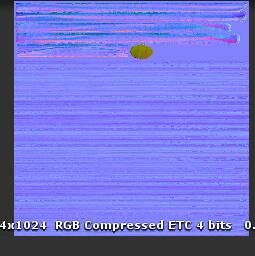 |  |
| Mobile Size | 1024 | 1024 | 1024 |
| PC Size | 1024 | 1024 | 1024 |
眉毛和睫毛为半透明渲染，仅受动态GI和平行光的漫反射光照。
| Name | Eyelash | Eyebrow |
|---|---|---|
| Texture |  |
 |
| Mobile Size | 512 | 512 |
| PC Size | 512 | 512 |